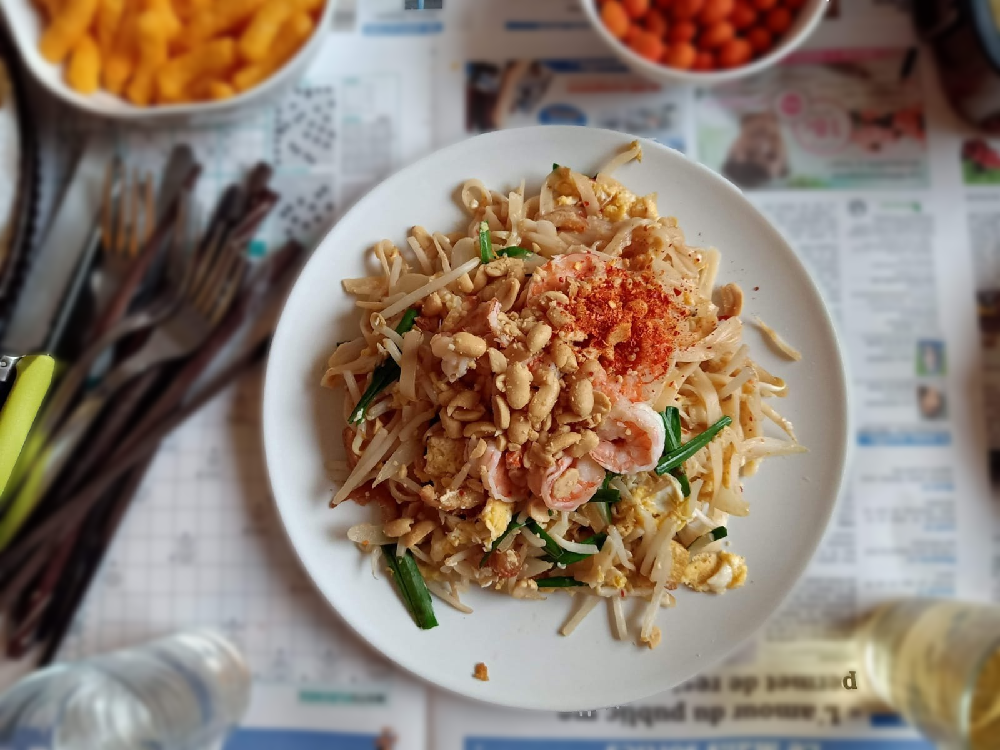

Pad Thai is a famous dish of the land of the Golden Temple and is known by many international tourists. Pad Thai is-hands down-one of the simple copycat recipes you can make at home. Our easy pad thai recipes is ready in less than 30 minutes.
What Is Pad Thai?
Pad thai is probably the number-one-selling dish at shit-down Thai restaurants in the U.S. But it actually has chinese origins. The dish's full name "kaway teow pad thai" transtales roughly to "Thai-style stir-fired noodles.". The cooking method of stir-frying meat, vegetables and noodles together with sause is more chinese and Thai. But Thailand unified around the recipe as its national dish in the 1930s when Thailand's prime minister, Phibun, popularized pad thai. He distributed the recipe for this nutritious, well-balanced and inexpensive meal. Today, it can be found at almost every food cart in the country.
Once you’ve had pad thai, it’s easy to know why it’s so popular. The ingredients sometimes vary, but it almost always contains rice noodles, peanuts, scrambled eggs and vegetables stir-fried in an unforgettable sauce. It’s full of fresh flavors, and the sauce has the perfect balance of sweet, sour and savory tastes.
How to cook Pad Thai
Ingredients
• 1 Noodle package
• 200g Fresh shrimp
• 100g White sugar
• 50g Bean sprout
• 1 piece of fried tofu
• 1 large egg, lightly beaten
• 3 cups coleslaw mix
• Garlic, purple onion, chili, peanut, lemon
• wedge seeds, salt
• 100g dried shrimp
• 200g jaggery sugar
• 200ml fish sauce
• 50g chives leaves
• 2 large egg
• 1/3 cup rice vinegar
How to make Pad Thai, Process materials
‐ Black tiger shrimp peeled. Thin sliced chicken breast.
‐ Tofu cut into small cubes.
‐ Crushed garlic, minced.
‐ Chopped scallions. Chives cut into pieces.
‐ Soak noodles in water for 15 minutes.
‐ Roast the peanuts with salt, remove the shell, pound well.
Processing Pad Thai
‐ Heat the oil over high heat in a large nonstick skillet or wok, add the shallot and garlic and cook until they’re tender and fragrant, about one minutes, stirring constantly to keep the garlic from burning. Next, add the tofu and stir fry, add all the shrimp to mix
‐ From here, the dish is nearly complete. Add the coleslaw mix along with the green onions, vinegar, sugar, soy sauce, fish sauce, chili garlic sauce. Stir-fry for about a minute, until the sauce is lightly bubbling and coleslaw is wilted. Finally, you add rice noodle cake and chives leaves, then cook briefly to allow the flavors to come together.
‐ Portion the stir-fry into four bowls. Garnish each dish with cilantro, additional peanuts, lime wedges and bean sprouts.